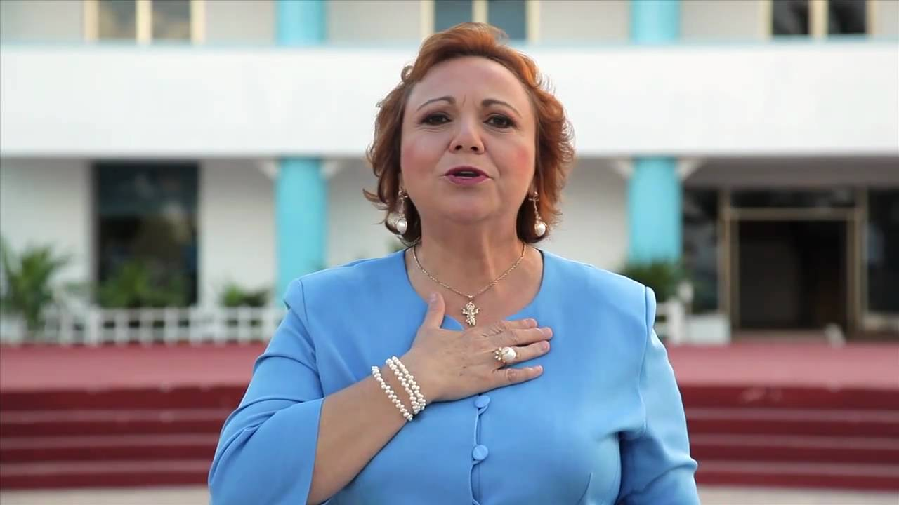

Alicia Conceppción Ricalde Magaña ( Isla Mujeres, Quintana Roo; 10 de noviembre de 1965) es una política mexicana,ex miembro del Partido Acción Nacional. Fue diputada federal plurinominal en la LXII Legislatura, en la Cámara de Diputados.
Desde 13 de octubre de 2016 fue nombrada, por el Gobernador Carlos Joaquín González, como Directora de la Administración Portuaria Integral de Quintana Roo (APIQROO).
Inició su actividad política como Diputada plurinominal al Congreso del Estado de Quintana Roo de 1996 a 1999 en donde fue coordinadora de la bancada del PAN, en 1999 fue elegida regidora del Ayuntamiento de Isla Mujeres y posteriormente fue elegida diputada federal suplente por el I Distrito Electoral Federal de Quintana Roo a la LVIII Legislatura en 2000, en 2002 ocupó la titularidad de la curul al dejar el propietario, Juan Ignacio García Zalvidea, para ser candidato a Presidente Municipal de Benito Juárez por el PVEM, pemaneciendo como diputada hasta 2003, posteriormente fue Delegada del Registro Agrario Nacional en Quintana Roo, cargo al que renunció en 2007 para ser candidata del PAN a Presidente municipal de Isla Mujeres en las elecciones del 3 de febrero de 2008, según los resultados preliminares habría ganado dicha elección, siendo confirmado esto por los conteos oficiales, siéndole entregada la constancia de mayoría y su nombramiento como Presidente electa.
Asumió el cargo el 10 de abril de 2008 y permaneció en él hasta el 2 de abril de 2010, en que solicitó licencia para buscar ser candidata del PAN a la gubernatura del estado, cargo al que fue oficialmente postulada el 30 de abril del mismo año.